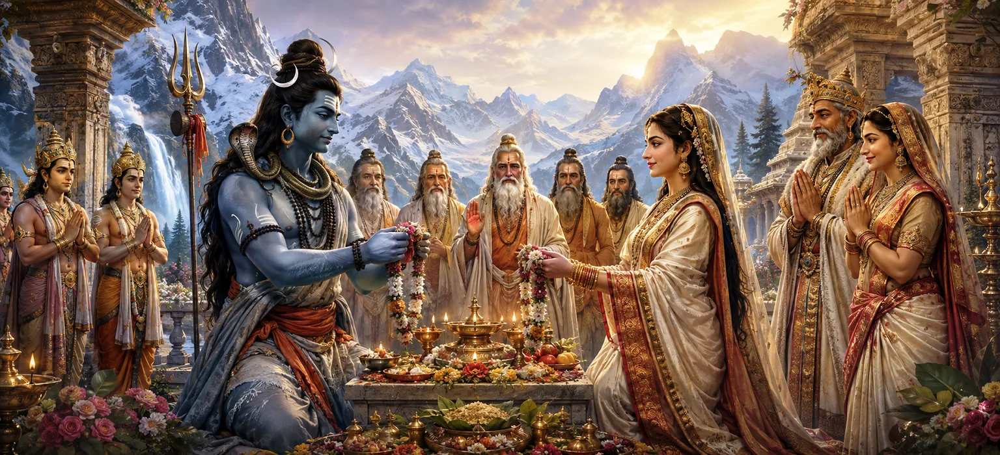

राजा हिमालय द्वारा सात महान ऋषियों द्वारा लाए गए प्रस्ताव को सहर्ष स्वीकार करने के बाद, भगवान शिव और देवी पार्वती के औपचारिक विवाह की तैयारी शुरू हो गई। इस पवित्र समारोह ने दोनों परिवारों के बीच आधिकारिक समझौते को चिह्नित किया और एक दिव्य नियति की पूर्णता का संकेत दिया जो पूरे ब्रह्मांड को आशीर्वाद देगा।
जैसे ही पवित्र विवाह की व्यवस्था की गई, शाही परिवार गतिविधि से भर गया। पुजारियों, संतों और परिचारकों ने यह सुनिश्चित करने के लिए मिलकर काम किया कि प्रत्येक अनुष्ठान पवित्र परंपरा के अनुसार किया जाएगा।
जैसे-जैसे दिन नजदीक आया, राजा हिमालय और रानी मैना को अत्यधिक खुशी का अनुभव हुआ। उनकी बेटी की भक्ति को पुरस्कृत किया गया था, और उन्होंने ईश्वर द्वारा नियुक्त संघ में भाग लेने के लिए सम्मानित महसूस किया।
सात ऋषियों ने सगाई की सफलता के लिए पवित्र आशीर्वाद दिया। उनकी उपस्थिति ने कार्यवाही में आध्यात्मिक अधिकार और शुभता जोड़ दी।
देवताओं ने इस अवसर को प्रसन्नता से देखा। वे समझ गए कि शिव और पार्वती का मिलन ब्रह्मांडीय संतुलन को बहाल करने और दुनिया के लिए भविष्य के खतरों को हराने में महत्वपूर्ण भूमिका निभाएगा।
सगाई ने औपचारिक रूप से परिवारों के बीच पवित्र प्रतिबद्धता स्थापित की। इसने अंतिम तैयारियों की शुरुआत को चिह्नित किया जो जल्द ही दिव्य विवाह समारोह की ओर ले जाएगा।
यद्यपि विनम्र और शांत, पार्वती का हृदय खुशी से भर गया। जिस भगवान की उसने वर्षों की तपस्या के माध्यम से पूजा की थी वह जल्द ही उसका शाश्वत साथी बन जाएगा।
साधु-संतों के आशीर्वाद और दोनों परिवारों की सहमति से सगाई औपचारिक रूप से संपन्न हो गई। शिव और पार्वती के बीच का पवित्र वादा अब देवताओं, ऋषियों और दिव्य प्राणियों के सामने समान रूप से पुष्ट हो गया।
स्वर्गीय प्राणियों ने इस अवसर को प्रसन्नतापूर्वक मनाया। दिव्य लोकों में संगीत गूँज उठा और भावी वर-वधू पर शुभ आशीर्वाद बरसाए गए।
सगाई पार्वती की अटूट तपस्या के प्रतिफल का प्रतिनिधित्व करती थी। उसके वर्षों के समर्पण, त्याग और भक्ति ने अंततः उसे उसकी पवित्र आकांक्षा की पूर्ति के करीब ला दिया था।
महान रिश्ते विश्वास, कर्तव्य और दिव्य उद्देश्य पर आधारित होते हैं।
निरंतर भक्ति अंततः दैवीय आशीर्वाद लाती है।
परमात्मा पवित्र उद्देश्यों को सही समय पर पूरा करता है।
हालाँकि सगाई संपन्न हो चुकी थी, फिर भी प्रत्याशा बढ़ती रही। संसार को शिव और पार्वती के भव्य विवाह का बेसब्री से इंतजार था, यह घटना पवित्र इतिहास के सबसे महान उत्सवों में से एक बनने वाली थी।
सगाई हमें याद दिलाती है कि ईमानदार प्रयास और दृढ़ विश्वास कभी व्यर्थ नहीं जाते। जब कार्यों को धर्म और भक्ति के साथ जोड़ दिया जाता है, तो ईश्वर धीरे-धीरे पूर्णता की ओर मार्ग खोलता है।
जैसे ही सगाई की खबर फैली, संतों, दिव्य प्राणियों और महान आत्माओं से आशीर्वाद मिलने लगा। संपूर्ण सृष्टि पवित्र मिलन की प्रत्याशा में आनंदित प्रतीत हो रही थी।
सगाई पूरी होने के साथ, ध्यान भव्य विवाह उत्सव के आयोजन की ओर गया। शिव और शक्ति के मिलन के योग्य समारोहों, निमंत्रणों और उत्सवों की योजनाएँ बनाई गईं।
"वफादार दिलों को शादी का दिन आने से बहुत पहले ही नियति एक कर देती है।"
भगवान शिव और देवी पार्वती का पवित्र विवाह अब पूरा हो गया है। दैवीय मिलन की आधिकारिक पुष्टि होने के साथ, भव्य दिव्य विवाह की तैयारी जोर-शोर से शुरू हो जाती है। शानदार शादी की तैयारियों को देखने के लिए अगले अध्याय को जारी रखें जो देवताओं, ऋषियों और हर क्षेत्र के प्राणियों को एक साथ लाएगा।